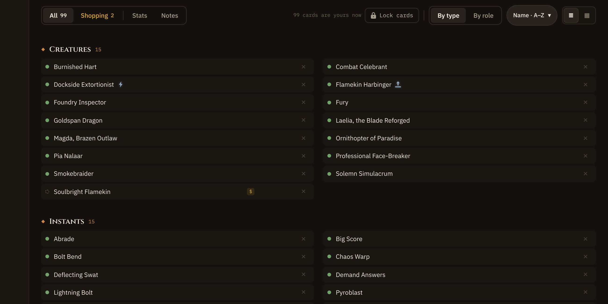
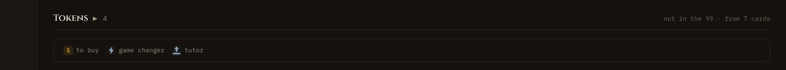
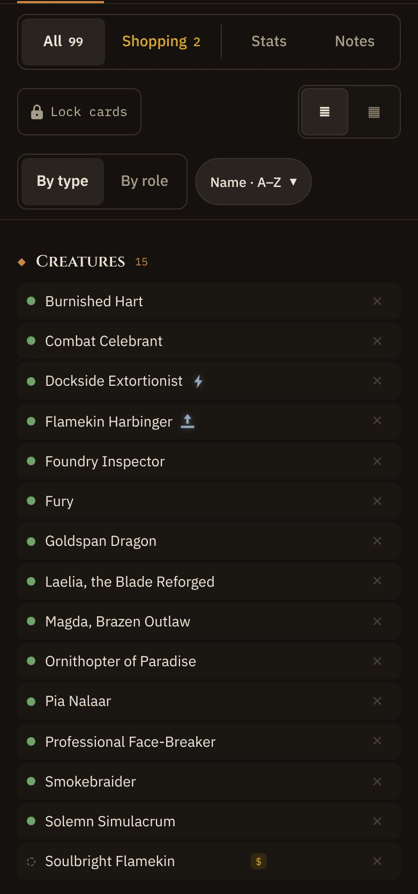
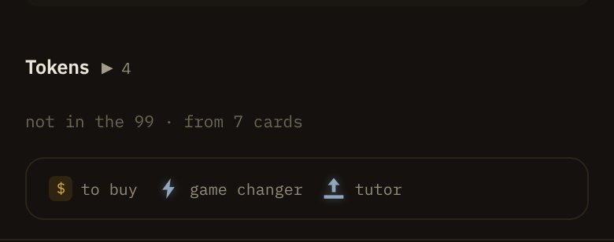
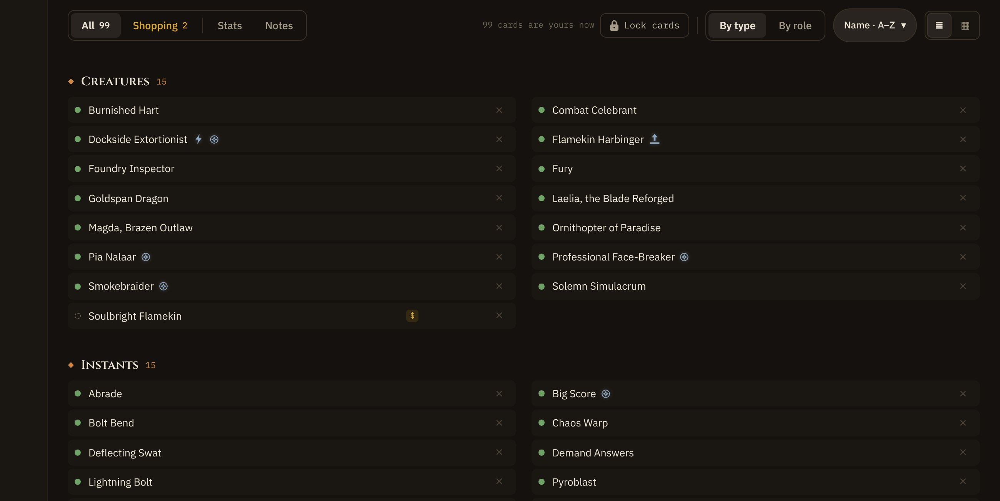
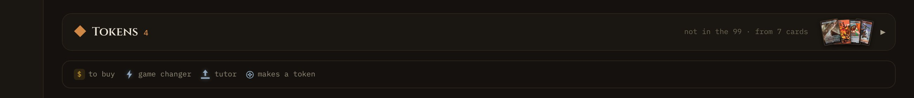
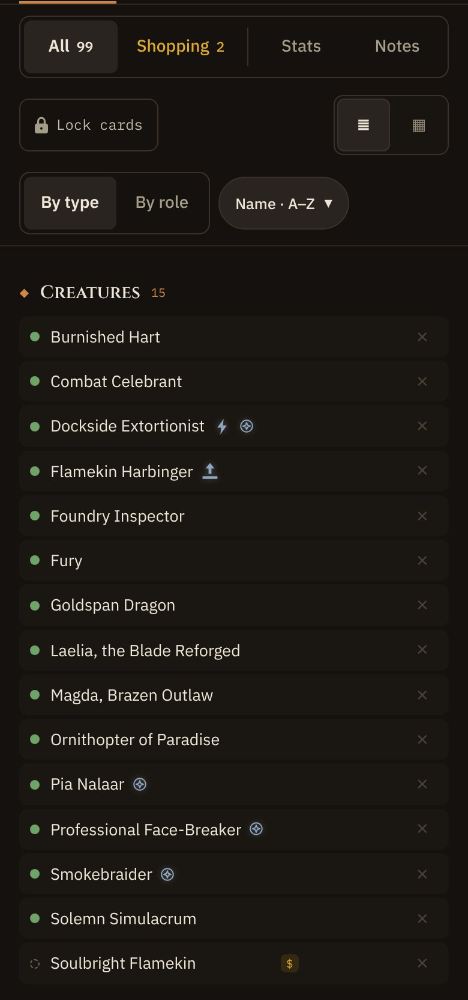
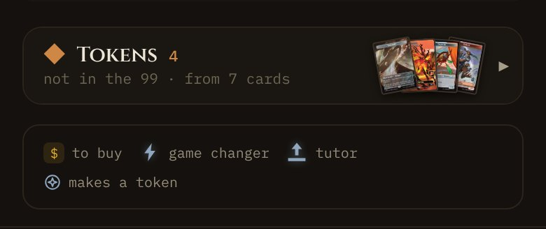

B · A token mark on the rows that make one
Dockside Extortionist, Pia Nalaar, Professional Face-Breaker and Smokebraider (and Big Score, Unexpected Windfall, Tempt with Vengeance below) carry the token glyph after their bracket marks, in the fact ink with its glow. It folds with the other marks by the shipped rule (its tooltip and the +N bubble read “Makes a Treasure token”). The key at the list’s foot gains “makes a token”. The row opens card details as today, where “Makes a Treasure token · Tokens ›” lands on the box.
BEFORE · SHIPPED

Desktop · the key at the foot


AFTER · R1

Desktop · the key at the foot

